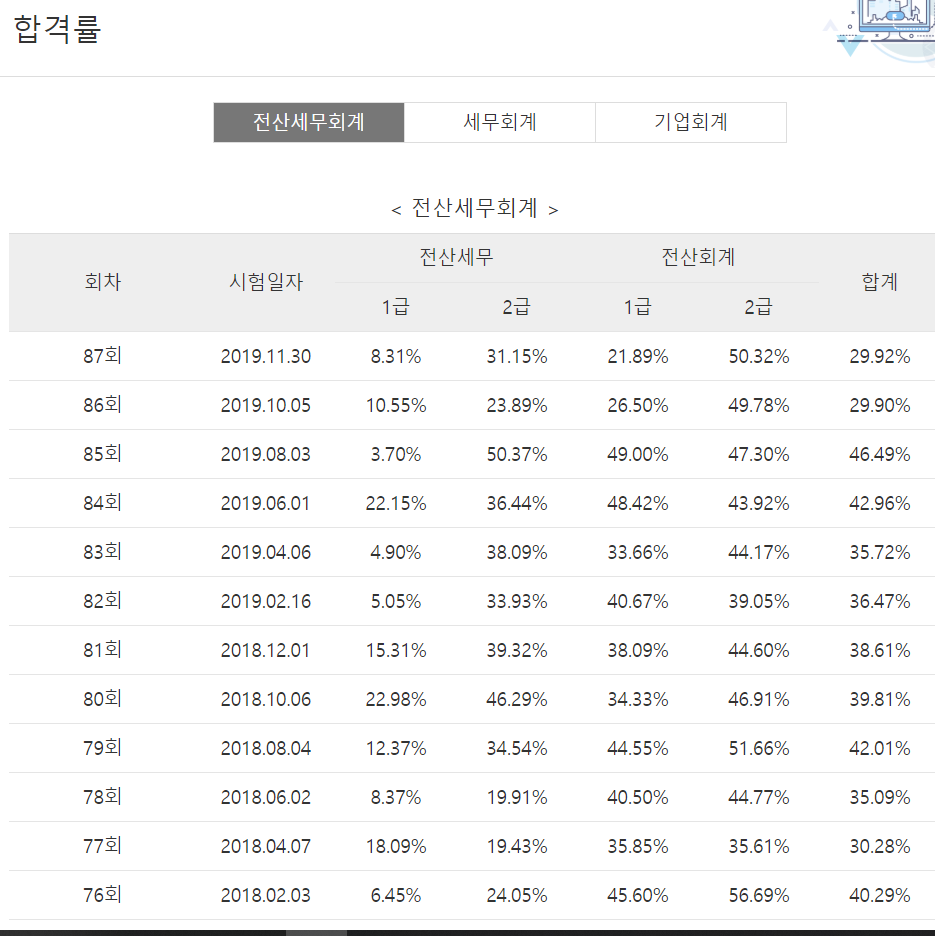

web연습
1. 악력기
2. 회계
3. 컴퓨터 언어
전산회계 1급 시험
이번에 전산회계에 대한 강의를 수강하면서 전산회계1급 자격증 시험도 같이 쳤었다.시험은
한국세무사회자격시험
에서 신청할 수 있다. 87회 시험에 응시했다. 사실 저번회차 시험이 어려웠기 때문에 이번회차는 쉬울거라 생각했지만 생각보다 어려워서 떨어졌다. 
87회차의 합격률
은 21.89% 였다. 86회차 시험이 49%인 것에 비하면 엄청나게 합격률이 낮아진것을 알 수 있다.